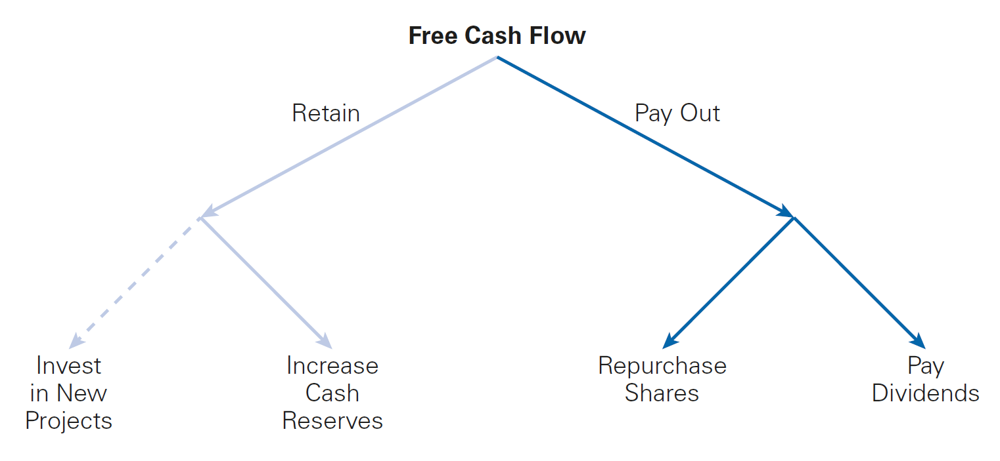
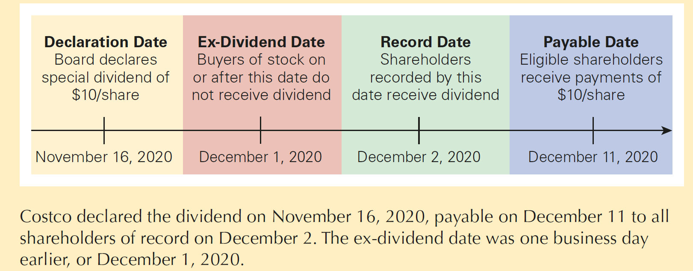

Payout Policy
Outline
This lecture is mainly based the following textbooks:
Study review and practice: I strongly recommend using Prof. Henrique Castro (FGV-EAESP) materials. Below you can find the links to the corresponding exercises related to this lecture:
- Multiple Choice Exercises - click here
\(\rightarrow\) For coding replications, whenever applicable, please follow this page or hover on the specific slides with coding chunks.
Distributions to Shareholders
Definition
Payout Policy is the the way a firm chooses between alternative ways to distribute free cash flow to its equityholders]

Dividends and Share Repurchases
There are basically two ways by which a firm can return free cash flow to its shareholders:
- By paying out as a dividend, where the firm literally provides an influx of cash to its existing shareholders
- By repurchasing existing shares, a firm can return cash to its shareholders
Importantly, in Brazil, there are two important aspects that need to be taken into consideration:
- Apart from dividends, we also have interest on equity (“Juros sobre o Capital Próprio - JCP”)
- Furthermore, in most countries, investors pay taxes over dividends and over capital gains.
\(\rightarrow\) In this lecture, we will study each of these options, understand their main aspects, usages, and discuss how they relate to a firm’s capital structure decision
Dividends
- The most straightforward way to return cash to the shareholders of a firm is through the payment of dividends
Definition
Dividends are the compensation (in cash) that firms provide to its shareholders. Apart from capital gains (i.e, the appreciation of the share price over time), shareholders can also benefit from receiving a cash influx related to the excess cash from the firm’s operations
But how do firms decide how much to pay in dividends?
- A public company’s board of directors determines the amount of the firm’s dividend
- The board sets the amount per share that will be paid and decides when the payment will occur
Note that dividends need not be limited to the net income generated by a firm - in fact, some firms issue additional equity or debt to pay out as dividends
Dividends - a practical timeline

Declaration Date: the date on which the board of directors authorizes the payment
Ex-Dividend Date: a date, two days prior to a dividend’s record date, on or after which anyone buying the stock will not be eligible for the dividend
Record Date: when a firm pays a dividend, only shareholders on record on this date receive
Payable Date (Distribution Date): a date, generally within a month after the record date, on which a firm mails dividend checks to its registered stockholders
Types of divends
- Apart from the important marks within the timeline of a dividend distribution, firm’s can distribute dividends in a variety of ways:
Regular Dividends: often paid every quarter
Special Dividend: a one-time dividend payment a firm makes, which is usually much larger than a regular dividend
Stock Split (Stock Dividend): when a company issues a dividend in shares of stock rather than cash to its shareholders
Liquidation Dividend: when the dividend is paid while liquidating the firm’s business. Contrary to the others, it is taxed as capital gain
Share Repurchases
Definition
Share Repurchases are an alternative way to pay cash to investors is through a share repurchase or buyback. In short, the firm uses cash to buy shares of its own outstanding stock.
Like dividends, there are several ways in which a firm may operationalize share repurchases. The most common terms are:
Open Market Repurchases: when a firm repurchases shares in the open market - these represent about 95% of all repurchase transactions
Tender Offer: a public announcement to all existing security holders to buy back a specified amount of outstanding securities at a given price (typically set at a 10% to 20% premium to the current market price) over a prespecified period of time. If shareholders do not tender enough shares, the firm may cancel the offer, and no buyback occurs
Targeted Repurchase: when a firm purchases shares directly from a specific shareholder
Interest on Equity
In Brazil, there is also a possibility of paying interest on equity: this used to be an important instrument when inflation rates were very high in Brazil. The goal was to create an incentive to hold equity when inflation was high
- Interest on equity is tax deductible at the corporate level but subject to a withholding tax at the shareholder level
- From an accounting perspective, interest on equity is treated similarly to interest (to creditors)
The tax rate is different for different types of investors. Usually, the interest on equity tax rate is lower than the corporate tax rate
Firms have a limit to pay as interest on equity. This limit increases every year by TJLP, an annual interest rate established by Brazilian Central Bank - access here
Dividends versus Share Repurchases
When it comes to payout policy, an important question relates to the method in which cash will be returned to shareholders - pay out as a dividend or repurchase shares?
To see that, assume that the board of Genron Corporation is meeting to decide how to pay out \(\small \$20\) million in excess cash to shareholders. The firms has no debt, and its equity cost of capital equals its unlevered cost of capital of \(\small 12\%\)
There are \(\small 10\) million shares outstanding, and the estimated free cash flows for the upcoming years are \(\small \$48\) million per year
Which option (if any) should be the preferred one?
- Paying out as dividends
- Share repurchases
As a starting point, assume that there are no market imperfections - i.e, Perfect Capital Markets
Option 1: Dividends
With \(\small 10\) million shares, Genron will be able to pay a dividend of \(\small \$20/10=\$2\) per share
The firm expects to generate future free cash flows of \(\small\$48\) million per year. Therefore, it anticipates paying a dividend of \(\small \$4.80\) per share each year thereafter
As a result, we can calculate what equityholders will receive as:
\[ \small \underbrace{2}_{\text{Payment today}} + \underbrace{\sum_{t=1}^{\infty}\dfrac{4.80}{(1+12\%)}}_{\text{Perpetuity}} \rightarrow 2 + \frac{4.80}{12\%} = 2 + 40 = 42 \]
- After the \(\small \$2\) dividend payment, the value of each share is simply \(\small \$42-\$2=\$40\) per share. Notice that after the dividend payment, the share price drops by the dividend per share value
\(\rightarrow\) In a perfect capital market, when a dividend is paid, the share price drops by the amount of the dividend when the stock begins to trade ex-dividend
Option 2: Share Repurchase
Instead of paying a dividend this year, Genron uses the \(\small 20\) million to repurchase its shares on the open market. In this case, the company can buy \(\small \$20/\$42 = 0.476\) million shares
Therefore, the new number of outstanding shares are: \(\small 10 - 0.476 = 9.524\) million
Note that this has not changed the free cash flow available to shareholders, but now, there are less shareholders to be paid for! After the repurchase, the future dividend value is:
\[ \small \dfrac{48,000,000}{9,524,000} = 5.04 \text{ per share} \]
- Therefore, the stock price is \(\small \frac{\$5.04}{12\%}=\$42\) per share
\(\rightarrow\) In perfect capital markets, an open market share repurchase has no effect on the stock price, and the stock price is the same as the cum-dividend1 price if a dividend were paid instead.
Comparing the options
An important implication of Perfect Capital Markets is that investors should be indifferent between the firm distributing funds via dividends or share repurchases:
- When receiving via dividends, they receive a cash payment of \(\small \$2\) and keep the value of their shares trading at \(\small \$40\)
- When receiving via share repurchases, regardless of tendering their shares, share prices are the same (\(\small \$ 42\))
From a purely value perspective, both alternatives yield the same value. However, if investors have preferences over a given option, they can make a homemade dividend:
- If the firm repurchases shares and the investor wants cash, the investor can raise cash by selling his/her shares
- If the firm pays a dividend and the investor would prefer stock, they can use the dividend to purchase additional fractional shares
Dividends versus Share Repurchases, alternative policy
What if, as opposed to the first option, Genror decides to pay a higher dividend? To see that, suppose that the firm wants to pay dividends larger than \(\small\$2\) per share right now, but it only has \(\small 20\) million in cash today
Thus, Genron needs an additional \(\small\$28\) million to pay the larger dividend now. To do this, the firm decides to raise the cash by selling new shares. Given a current share price of \(\small\$42\), the firm could raise \(\small \$28\) million by issuing \(\small \$28/\$42= \$0.67\) million new shares
The new dividend per share is: \(\small \$48/10.67=\$4.5\). The cum-dividend share price is:
\[ \small \underbrace{4.5}_{\text{Actual Dividend}} + \underbrace{\frac{4.5}{12\%}}_{\text{Perpetuity}}= 4.5 + 37.5 = 42 \]
\(\rightarrow\) As issuing new equity does not change the free cash flows, stock price does not change as a result of the share repurchase!
Dividends vs. Share Repurchases, practice
Suppose Genron does not adopt the third alternative policy, and instead pays a 2 dividend per share today. Show how an investor holding \(\small 2,000\) shares could create a homemade dividend of \(\small \$4.5\times 2,000=\$9,000\) per year on her own.
\(\rightarrow\) Solution
If Genron pays a \(\small\$2\) dividend, the investor receives \(\small \$4,000\) in cash and holds the rest in stock. Therefore, To receive \(\small \$9,000\) in total today, she can raise an additional \(\small \$5,000\) by selling \(\small 125\) shares at \(\small \$40\) per share just after the dividend is paid
In future years, Genron will pay a dividend of \(\small \$4.80\) per share. Because she will own \(\small 2,000 − 125 = 1,875\) shares, the investor will receive dividends of \(\small 1,875 \times 4.80 = 9,000\) per year from then on
Dividends vs. Share Repurchases, practice
Suppose you own \(\small1,000\) shares in a firm that has historically paid dividends at a rate of \(\small 50\%\) of earnings per share. Although earnings per share this year are \(\small\$5\), the firm has decided to retain all of the earnings and not pay a dividend. The current market price is \(\$50\) per share. How could you create a homemade dividend based on the firm’s dividend history?
\(\rightarrow\) Solution
- Based on the firm’s history, its “normal” dividend would have been \(\$5 × 50\% = \$2.50\) per share. To create a homemade dividend, you need to sell enough shares to generate the desired cash flow:
\[ \small \underbrace{1,000}_{\text{Number of Shares}} \times \underbrace{2.50}_{\text{Dividend per Share}} = 2,500 \]
- Therefore, given a current market value of \(\small\$50\) per share, you would need to sell \(\small \$2,500/\$50=50\) shares to create the desired homemade dividend
Modigliani and Miller and the Dividend Policy Irrelevance
Note that there is a tradeoff between current and future dividends:
- If Genron pays a higher current dividend, future dividends will be lower
- If Genron pays a lower current dividend, future dividends will be higher
Regardless of the payout policy, shareholders can create a homemade dividend on their own, matching his/her specific payout preferences, by buying or selling shares themselves
Therefore, the only factor that determines a firm’s payout policy is the free cash flow.
\(\rightarrow\) In perfect capital markets, holding fixed the investment policy, the firm’s choice of dividend policy is irrelevant and does not affect the initial share price. While dividends do determine share prices, a firm’s choice of dividend policy does not.
Payout Policy in Practice
Based on our discussion, when we assume that capital markets are perfect, the payout policy is only determined by the firm’s future cash flows, and the specific type of payment and timing are irrelevant to determine the firm’s value
In reality, capital markets are not perfect:
- Some types of payout may have higher costs than others, such as taxes
- There could be limits and/or regulations around a given payout type
- Finally, different payout policies may be subject to a different degree of information asymmetry
As a result, if the firm’s payout policy is relevant to determine the firm’s value, it is only due to these imperfections!
\(\rightarrow\) In what follows, we will look at the most important market imperfections that would make the firm’s payout policy relevant to the firm’s value
The Tax Disadvantage of Dividends
- First and foremost, there could be differences in the taxation of Dividends and Capital Gains
- Shareholders must pay taxes on the dividends they receive, and they must also pay capital gains taxes when they sell their shares
- Dividends are typically taxed at a higher rate than capital gains1. In fact, long-term investors can defer the capital gains tax forever by not selling
- The higher the tax rate on dividends, the more undesirable is for a firm to raise funds to pay a dividend
- When dividends are taxed at a higher rate than capital gains, if a firm raises money by issuing shares and then gives that money back to shareholders as a dividend, shareholders are hurt because they will receive less than their initial investment
The Tax Disadvantage of Dividends, continued
To see that, assume that a firm raises \(\small\$25\) million from shareholders and uses it to pay \(\small\$25\) million in dividends. Dividends are taxed at a \(\small39\%\) tax rate, and Capital Gains are taxed at a \(\small20\%\) tax rate. We then have the following cases:
In terms of dividend taxes, shareholders will owe \(\small 39\% \times \$25 = 9.75\) million in taxes
Because the firm value falls after dividend, the capital gain will be \(\small \$25\) million less when investors sell, lowering the capital gains taxes by \(\small 20\% \times \$25 = \$5\) million
Shareholders will pay a total of \(\small \$9.75 − \$5.00 = \$4.75\) million in taxes
Shareholders will receive back only \(\small \$25 − \$4.75 = 20.25\) million
The Tax Disadvantage of Dividends, continued
When the tax rate on dividends is greater than the tax rate on capital gains, shareholders will pay lower taxes if a firm uses share repurchases rather than dividends
This tax savings will increase the value of a firm that uses share repurchases rather than dividends
\(\rightarrow\) As a consequence, the optimal dividend policy when the dividend tax rate exceeds the capital gain tax rate is to pay no dividends at all
Dividend Puzzle: when firms continue to issue dividends despite their tax disadvantage, when it exists
Dividend Capture and Tax Clienteles
The preference for share repurchases rather than dividends depends on the difference between the dividend tax rate and the capital gains tax rate
The Effective Dividend Tax Rate: consider buying a stock just before it goes ex-dividend and selling the stock just after. The equilibrium condition is:
\[ \small (P_{\text{Cum}}-P_{\text{Ex}})\times\underbrace{(1-\tau_g)}_{\text{Net of Capital Gain Taxes}} = D\times \underbrace{(1-\tau_d)}_{\text{Net of Dividend Taxes}} \]
- Rearranging terms, we have;
\[ \small P_{\text{Cum}}-P_{\text{Ex}} = \frac{D\times1-\tau_d}{1-\tau_g} \rightarrow D \times \bigg[ 1 - \frac{\tau_d - \tau_g}{1-\tau_g} \bigg] \]
Dividend Capture and Tax Clienteles
\[ \small P_{\text{Cum}}-P_{\text{Ex}} = D \times \bigg[ 1 - \frac{\tau_d - \tau_g}{1-\tau_g} \bigg] \]
- If we set \(\tau^*_d = \frac{\tau_d - \tau_g}{1-\tau_g}\), we have that:
\[ \small P_{\text{Cum}}-P_{\text{Ex}} = D \times (1-\tau^*_d) \]
- \(\small \tau^\star_d\) measures the additional tax paid by the investor per dollar of after-tax capital gains income that is received as a dividend. Assuming \(\small \tau_g=15\%\) and \(\small \tau_d=30\%\):
\[ \small \tau^*_d = \frac{0.30 - 0.15}{1-0.15} = 0.176 \]
\(\rightarrow\) In words, there is a significant tax disadvantage of dividends: each \(\small \$1\) of dividends is worth only \(\small\$0.824\) in capital gains.
Dividend Capture and Tax Clienteles
In practice, \(\tau_d^\star\), the effective dividend tax rate, differs across investors for a variety of reasons:
- Income Levels
- Investment Horizons
- Tax Jurisdictions
- Types of Investor or Type of investment Account
As a result of their different tax rates, investors will have varying preferences regarding dividends. This opens room for firms to try matching their payout policy to the preferences of investors:
- The Clientele Effect is when the dividend policy of a firm reflects the tax preference of its investor clientele
- For example, individuals in the highest tax brackets have a preference for stocks that pay no or low dividends, whereas tax-free investors and corporations have a preference for stocks with high dividends
Payout Versus Retention of Cash
As of now, we discussed why firms may not be indifferent regarding different payout options (i.e., dividends versus share repurchases)
Another strand of the discussion relates to the decision to payout or retain free cash flow:
In perfect capital markets, once a firm has taken all positive-NPV projects, it is indifferent between saving excess cash and paying it out
However, when such market imperfections do exist, there will be an important trade-off: while retaining cash can reduce the costs of raising capital in the future, but it can also increase taxes and agency costs.
\(\rightarrow\) As a result The extent to which a firm will prefer one or the other will depend on the trade-off between the benefits and costs of retaining cash!
Payout versus Retention of Cash in Perfect Capital Markets
- If a firm has already taken all positive-NPV projects, any additional projects it takes on are zero or negative-NPV projects
Rather than wasting excess cash on negative-NPV projects, a firm can use the cash to purchase financial assets
In perfect capital markets, buying and selling securities is a zero-NPV transaction, so it should not affect firm value.
- Modigliani-Miller Payout Irrelevance: with perfect capital markets, the retention versus payout decision is irrelevant
\(\rightarrow\) In perfect capital markets, if a firm invests excess cash flows in financial securities, the firm’s choice of payout versus retention is irrelevant and does not affect the initial share price.
Payout Versus Retention of Cash, practice
Payne Enterprises has \(\small\$20,000\) in excess cash. Payne is considering investing the cash in one-year Treasury bill paying \(\small5\%\) interest and then using the cash to pay a dividend next year. Alternatively, the firm can pay a dividend immediately, and shareholders can invest the cash on their own. In a perfect capital market, which option will shareholders prefer?
\(\rightarrow\) Solution:
- If Payne pays an immediate dividend, the shareholders receive \(\small\$20,000\) today
- If Payne retains the cash, at the end of one year the company will be able to pay a dividend of \(\small \$20,000 \times (1+5\%)=\$21,000\)
Finally, note that if shareholders invest in Treasury bills themselves, they would also have \(\small\$21,000\) at the end of one year
In either case, investors have the same payoff!
Corporate Taxes and Cash Retention, practice
What happens to the trade-off between dividends and cash retention when we assume that there are market imperfections?
An important market imperfection relates to Corporate Taxes: corporate Taxes make it costly for a firm to retain excess cash.
From a valuation perspective, cash is equivalent to negative leverage, so the tax advantage of leverage implies a tax disadvantage to holding cash
To see that, assume that Payne has a marginal tax rate of \(\small39\%\). Would a tax-exempt endowment prefer that Payne use its excess cash to pay the dividend immediately or invest the cash in a Treasury bill paying \(\small5\%\) interest and then pay out a dividend?
Corporate Taxes and Cash Retention, practice
- To see that, assume that Payne has a marginal tax rate of \(\small39\%\). Would a tax-exempt endowment prefer that Payne use its excess cash to pay the dividend immediately or invest the cash in a Treasury bill paying \(\small5\%\) interest and then pay out a dividend?
\(\rightarrow\) Solution:
If Payne pays a dividend today, shareholders receive \(\small\$20,000\)
If Payne retains the cash for one year, it will earn an after-tax return on the Treasury bills of \(\small 5\% \times (1-0.39\%)=3.05\%\)
- Therefore, Payne will pay a dividend of \(\small\$20,000 \times (1+3.05\%) = 20,610\), which is less than the \(\small\$21,000\) the endowment would have earned if they had invested in the Treasury bills themselves!
Investor Taxes and Cash Retention
- The decision to pay out versus retain cash may also affect the taxes paid by shareholders:
- When a firm retains cash, it must pay corporate tax on the interest it earns on that cash. In addition, the investor will owe capital gains tax on the increased firm value. The interest on retained cash is taxed twice
- If the firm paid the cash to its shareholders instead, they could invest it and be taxed only once on the interest that they earn
- The cost of retaining cash thus depends on the combined effect of the corporate and capital gains taxes, compared to the tax on interest income:
\[ \small \tau^*_{\text{Retain}} = 1-\frac{(1-\tau_c)(1-\tau_g)}{(1-\tau_i)} \]
Issuance and Distress Costs
Besides any tax considerations, firms retain cash balances to cover potential future cash shortfalls, despite the tax disadvantage to retaining cash:
- A firm might accumulate a large cash balance if there is a reasonable chance that future earnings will be insufficient to fund future positive-NPV investment opportunities
- The cost of holding cash to cover future potential cash needs should be compared to the reduction in transaction, agency, and adverse selection costs of raising new capital** through new debt or equity issuances
However, there are also Agency Costs of Retaining Cash:
- When firms have excessive cash, managers may use the funds inefficiently by paying excessive executive perks, over-paying for acquisitions, etc
- Paying out excess cash through dividends or share repurchases, rather than retaining cash, can boost the stock price by reducing managers’ ability and temptation to waste resources
\(\rightarrow\) The optimal payout policy trades-off these benefits against agency costs!
Payout Versus Retention of Cash, practice
Altgreen is an all-equity firm with \(\small\$250\) million shares outstanding. It has \(\small\$300\) million in cash and expects future free cash flows of \(\small\$150\) million per year. Management plans to use the cash to expand the firm’s operations, which will in turn increase future free cash flows by \(\small10\%\). If the cost of capital of Altgreen’s investments is \(\small7\%\), how would a decision to use the cash for a share repurchase rather than the expansion change the share price?
\(\rightarrow\) Solution:
- If Altgreen uses the cash to expand, its future free cash flows will increase by \(\small10\%\) to \(\small\$165\) million per year. Using the perpetuity formula, its market value will be:
\[ \small \dfrac{165}{7\%} = 2.357 \text{ billion, or } \dfrac{2.357}{250} = 9.43 \text{ per share} \]
Payout Versus Retention of Cash, practice
Altgreen is an all-equity firm with \(\small\$250\) million shares outstanding. It has \(\small\$300\) million in cash and expects future free cash flows of \(\small\$150\) million per year. Management plans to use the cash to expand the firm’s operations, which will in turn increase future free cash flows by \(\small10\%\). If the cost of capital of Altgreen’s investments is \(\small7\%\), how would a decision to use the cash for a share repurchase rather than the expansion change the share price?
If, on the other hand, Altgreen does not expand, the value of its future free cash flows will be \(\small 150/7\% = \$2.143\) billion. Adding cash, we have \(\small \$2.443/250 = \$9.77\) per share
If Altgreen repurchases shares, it will repurchase \(\small \$300/\$9.77=30.71\) million shares. Therefore, prices would be:
\[ \small \dfrac{2.143}{219.29}= 9.77 \text{ per share} \]
Signaling with Payout Policy
In theory, we would expect dividends to trend with earnings. In practice, however firms change dividends infrequently, and dividends are much less volatile than earnings. Why?
As with Debt, Dividends can also be used as a way to signal information to the market.
We call Dividend Smoothing the practice of maintaining relatively constant dividends
The Dividend Signaling Hypothesis is the idea that dividend changes reflect managers’ views about a future earnings:
- If firms smooth dividends, the firm’s dividend choice will contain information regarding management’s expectations of future earnings
- When a firm increases dividend, it sends a positive signal to investors that they expect to be able to afford the higher dividend for the foreseeable future
- When a firm decreases dividend, it may signal that they have given up hope that earnings will rebound in the near term and so need to save cash
Signaling with Payout Policy, continued
Although an increase of a firm’s dividend may signal optimism regarding its future FCF, it might also signal a lack of investment opportunities
In this case, the dividend decrease might lead to a positive stock price reaction.
Signaling and Share Repurchases
Like Dividends, Share Repurchases can be also be seen as a credible signal the current shares are underpriced, as if they were overpriced, a share repurchase would be costly for current shareholders:
If investors believe that managers have better information regarding the firm’s prospects and act on behalf of current shareholders, then investors will react positively to share repurchase announcements
Notwithstanding, announcing a share repurchase today does not necessarily represent a long-term commitment to repurchase shares in the future. Because of that, Dividends have a stronger, credible signal than Share Repurchases
Furthermore, a firm may announce a share repurchase program but not repurchase any shares, while on the other hand, when a firm announces dividends payment, it has a commitment to pay
Stock Dividends
As discussed before, with a stock dividend, a firm does not pay out any cash to shareholders. As a result, the total market value of the firm’s equity is unchanged
The only thing that is different is the number of shares outstanding. The stock price will therefore fall because the same total equity value is now divided over a larger number of shares
To see that, suppose that Genron firm paid a \(\small50\%\) stock dividend rather than a cash dividend
- A shareholder who owns \(\small\$100\) shares as \(\small\$42\) before the dividend has a portfolio worth \(\small \$4,200\)
- After the dividend, the shareholder owns \(\small150\) shares
Because the portfolio is still worth \(\small4,200\), the stock price will fall to \(\small \$4,200/150=\$28\).
Sometimes, firms finance new shares. So, it is like shareholders have received cash and immediately bought new shares. In this case, decline in price is not as large as above.
Stock Splits
Splits are known as situations where a firm a smaller pool of highly valued shares share into a higher number of shares
The typical motivation for a stock split is to keep the share price in a range thought to be attractive to small investors:
- If the share price rises “too high”, it might be difficult for small investors to invest in the stock
- Keeping the price “low” may make the stock more attractive to small investors and can increase the demand for and the liquidity of the stock, which may in turn boost the stock price
On average, announcements of stock splits are associated with a small positive increase in the stock price
On the other hand, when the price of a company’s stock falls too low and the company reduces the number of outstanding shares, \(\small 2\) shares become 1 of twice the previous price - also known as reverse split or insplit
Spin-Offs
When a firm sells a subsidiary by selling shares in the subsidiary alone. That is, the parent turns a subsidiary into a separate company
For instance, Itaú-XP spin-off:
Itaú could have sold XP and paid cash as dividends
Instead, Itaú’s current shareholders received a given number of XP’s stocks per share they hold of Itaú
Spin-offs mainly offer two advantages:
- It avoids the transaction costs associated with the actual sale
- The special dividend is not taxed as a cash distribution. Investors will only pay capital gains taxes when they sell the received stocks
Practice
Important
Practice using the following links: